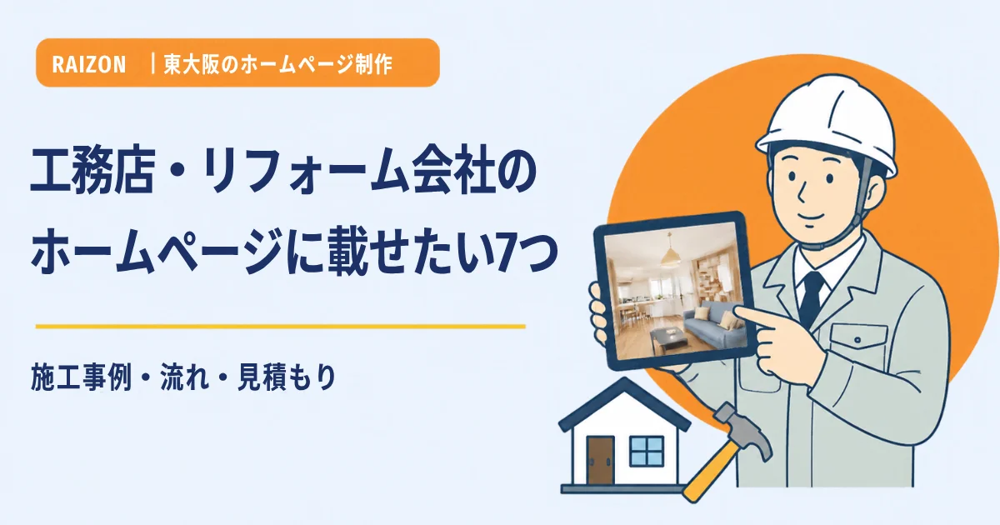
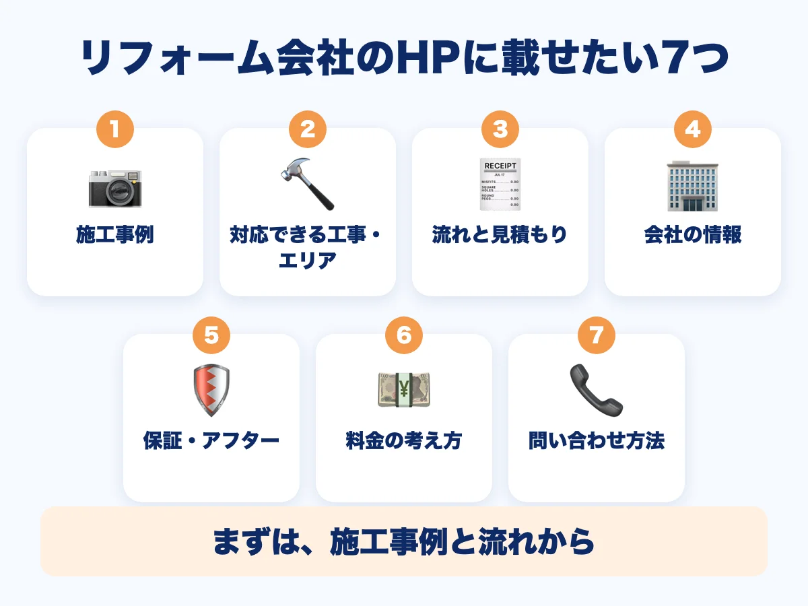
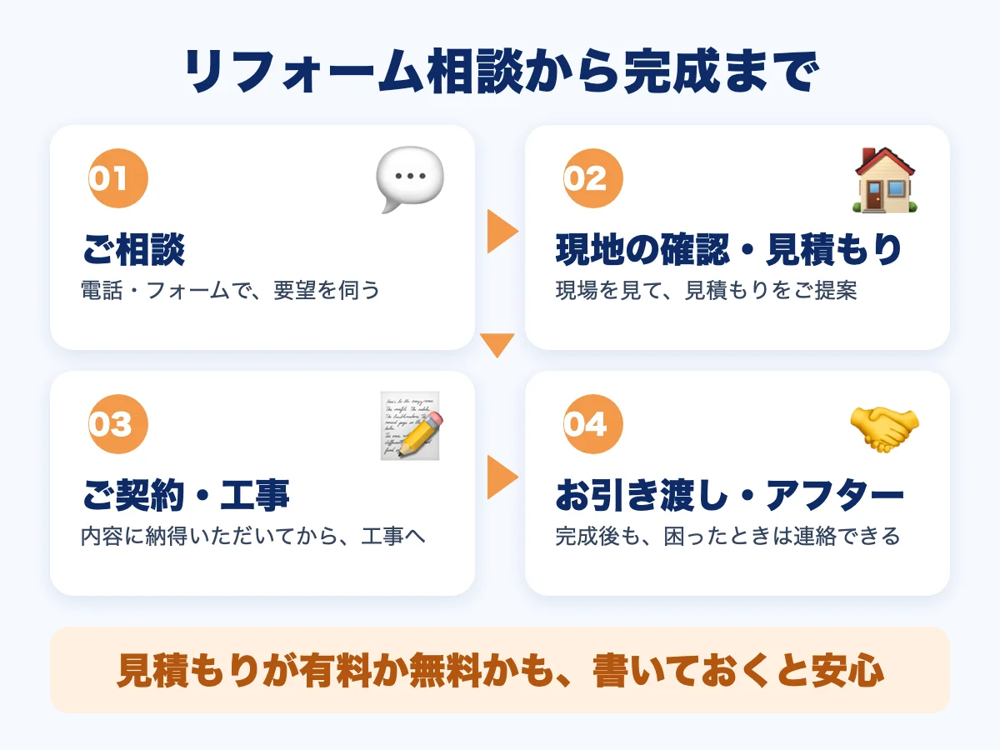

東大阪の工務店・リフォーム会社のホームページに載せたい7つのこと｜施工事例・流れ・見積もり

住まいの工事は、お客様にとって、金額も大きく、頻繁に頼むものではありません。だからこそ、「どんな会社か」「どんな工事をしてきたか」「頼むとどう進むか」を、ホームページで確かめてから、問い合わせる方が多くなります。この記事では、東大阪の工務店・リフォーム会社のホームページに載せておきたい情報を、7つにまとめます。
- 載せたいのは「施工事例」「対応できる工事とエリア」「工事の流れと見積もり」「会社の情報」「保証・アフター」「料金の考え方」「問い合わせ方法」の7つ
- 金額が大きいぶん、お客様は「相談したあと、どうなるか」を知りたがる。流れを先に見せると、問い合わせの不安が減る
- 料金は、工事ごとに変わるため「決まった金額」ではなく「何で決まるか」を書く

1. 施工事例（写真つき）
いちばん見られるのは、これまでの工事の写真です。工事の前後の写真があると、仕上がりのイメージがわきます。「キッチンの入れ替え」「外壁の塗り替え」「水まわりのリフォーム」のように、工事の種類ごとに並べると探しやすくなります。工事の内容や広さ、おおよその期間を、短い文章でそえましょう。お客様のお住まいが特定できる写真や、お名前を載せるときは、必ず、ご本人の許可をもらってください。撮り方のコツは、ホームページの写真は、スマホで十分？をご覧ください。
2. 対応できる工事と、対応エリア
新築、増改築、水まわり、外壁・屋根、内装、小さな修理など、対応できる工事を書き出します。「どこまでの工事なら頼めるか」が見えないと、お客様は問い合わせをためらいます。対応エリアも、市や町の名前で書いておきましょう（例：東大阪市、大阪市東部、八尾市など）。検索で見つけてもらうためにも、地域名は大切です。地域で見つけてもらうコツは、小阪・布施・八戸ノ里のホームページのコツをご覧ください。
3. 工事の流れと、見積もりの出し方
相談から完成まで、どう進むのかを、順番に書きます。たとえば「ご相談 → 現地の確認 → 見積もりのご提案 → ご契約 → 工事 → お引き渡し → アフター」のような流れです。見積もりが有料か無料か、現地を見てから出すのか、おおよその期間はどれくらいか、も書いておくと、お客様は安心して連絡できます。

4. 会社の情報（代表者・許可や資格）
工事は、会社を信頼して頼むものです。会社名、所在地、電話番号、創業の年、代表者のあいさつ、顔写真があると、人柄が伝わります。お持ちの許可や資格（建設業の許可、建築士、施工管理技士など）は、番号や名称を、正確に書きます。ただし、更新や変更があったときは、ホームページも直せるようにしておきましょう。
5. 保証・アフターフォロー
「工事が終わったあと、困ったら連絡できるか」は、お客様が気にするところです。保証の内容や期間、点検の有無、連絡の方法を、わかる範囲で書きます。保証の内容は、工事ごとに違うことが多いので、「工事内容により異なります。ご契約前にご説明します」と、書き方を決めておくのも一つです。
6. 料金の考え方
工事は、建物の状態や、使う材料で金額が変わります。そのため、一つの金額を書くのが難しいことも多いでしょう。そんなときは、「何で金額が決まるのか」を書きます。たとえば「広さ」「材料のグレード」「工事の範囲」「現場の状態」などです。過去の事例に、おおよその金額を添える方法もあります（「この工事は、この範囲で、この金額でした」と、条件も一緒に）。条件を書かずに金額だけを載せると、誤解のもとになるので気をつけましょう。
7. 問い合わせの方法
電話、お問い合わせフォーム、現地調査の申し込みなど、連絡の方法をわかりやすい場所に置きます。電話番号は、スマートフォンで押せば発信できるようにしておくと便利です。フォームの項目は、お名前、連絡先、工事の内容くらいに絞ると、送ってもらいやすくなります。電話の受付時間と、現場に出ていて出られないときの対応（折り返しなど）も、書いておきましょう。問い合わせを増やす工夫は、ホームページから問い合わせを増やす5つの工夫をご覧ください。
| まずやること | あとから足すこと |
|---|---|
| 施工事例（数件）・対応できる工事とエリア・流れと見積もり・問い合わせ方法 | 代表者のあいさつ・保証の説明・事例の追加・お知らせの更新 |
RAIZONでは
RAIZONは、東大阪市の下小阪を拠点に、お店や会社のホームページを月額制で制作しています。初期制作費は0円、月額9,800円（税抜）。月4回までの修正・更新が含まれ、施工事例やお知らせの追加にも対応します。最低契約期間はありません。なお、ホームページを作れば必ずお客様が増える、とはお約束できません。
よくある質問
金額が決まっていない工事は、料金を載せなくてもいいですか？
載せなくても構いません。その代わり、「何で金額が決まるか」「見積もりの出し方」を書いておくと、お客様の不安が減ります。
お客様の家の写真を載せても大丈夫ですか？
必ず、ご本人の許可をもらってください。お名前や、場所が特定できる情報は、載せないほうが安心です。許可がもらえない場合は、工事の途中の写真や、部分的な写真にする方法もあります。
写真が少なくても作れますか？
作れます。まずはある写真で始めて、工事のたびに足していくことができます。
どこから相談すればいいですか？
お問い合わせフォームから、お気軽にご相談ください。
ほかのコラム
 料金・費用
料金・費用大阪・東大阪の飲食店ホームページ制作｜費用の目安と食べログ・SNSとの使い分け
大阪・東大阪で飲食店のホームページ制作を頼むときの費用の目安を、買い切りと月額制に分けて整理しました。食べログ・Googleマップ・Instagramとの使い分け、制作会社への確認項目、見積もりの見方も解説します。
 集客・運用
集客・運用ホームページから問い合わせを増やす5つの工夫｜電話・フォーム・載せる内容
ホームページを作ったのに問い合わせが少ない、という小さなお店・事業者さん向けに、問い合わせにつなげる5つの工夫を解説します。電話番号の見せ方、ボタンの置き場所、フォームの項目、料金や流れの書き方、写真での安心感を、やさしくまとめました。
 制作の基礎
制作の基礎ホームページは自作？制作会社？月額制？｜3つの作り方を比べて選ぶ
ホームページを自分で作る方法、制作会社に頼む方法、月額制のサービスに頼む方法を、費用・手間・更新のしやすさ・困ったときの相談先の4つの視点で比べます。東大阪の個人事業主さん・小さなお店向けに、選び方をやさしく解説します。